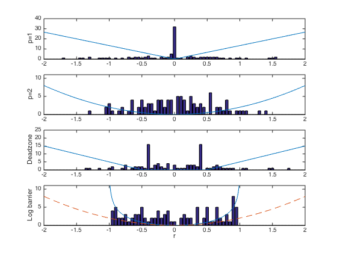

% Section 6.1.2 % Boyd & Vandenberghe "Convex Optimization" % Original by Lieven Vandenberghe % Adapted for CVX Argyris Zymnis - 10/2005 % % Comparison of the ell1, ell2, deadzone-linear and log-barrier % penalty functions for the approximation problem: % minimize phi(A*x-b), % % where phi(x) is the penalty function % Log-barrier will be implemented in the future version of CVX % Generate input data randn('state',0); m=100; n=30; A = randn(m,n); b = randn(m,1); % ell_1 approximation % minimize ||Ax+b||_1 disp('ell-one approximation'); cvx_begin variable x1(n) minimize(norm(A*x1+b,1)) cvx_end % ell_2 approximation % minimize ||Ax+b||_2 disp('ell-2'); x2=-A\b; % deadzone penalty approximation % minimize sum(deadzone(Ax+b,0.5)) % deadzone(y,z) = max(abs(y)-z,0) dz = 0.5; disp('deadzone penalty'); cvx_begin variable xdz(n) minimize(sum(max(abs(A*xdz+b)-dz,0))) cvx_end % log-barrier penalty approximation % % minimize -sum log(1-(ai'*x+bi)^2) disp('log-barrier') % parameters for Newton Method & line search alpha=.01; beta=.5; % minimize linfty norm to get starting point cvx_begin variable xlb(n) minimize norm(A*xlb+b,Inf) cvx_end linf = cvx_optval; A = A/(1.1*linf); b = b/(1.1*linf); for iters = 1:50 yp = 1 - (A*xlb+b); ym = (A*xlb+b) + 1; f = -sum(log(yp)) - sum(log(ym)); g = A'*(1./yp) - A'*(1./ym); H = A'*diag(1./(yp.^2) + 1./(ym.^2))*A; v = -H\g; fprime = g'*v; ntdecr = sqrt(-fprime); if (ntdecr < 1e-5), break; end; t = 1; newx = xlb + t*v; while ((min(1-(A*newx +b)) < 0) | (min((A*newx +b)+1) < 0)) t = beta*t; newx = xlb + t*v; end; newf = -sum(log(1 - (A*newx+b))) - sum(log(1+(A*newx+b))); while (newf > f + alpha*t*fprime) t = beta*t; newx = xlb + t*v; newf = -sum(log(1-(A*newx+b))) - sum(log(1+(A*newx+b))); end; xlb = xlb+t*v; end % Plot histogram of residuals ss = max(abs([A*x1+b; A*x2+b; A*xdz+b; A*xlb+b])); tt = -ceil(ss):0.05:ceil(ss); % sets center for each bin [N1,hist1] = hist(A*x1+b,tt); [N2,hist2] = hist(A*x2+b,tt); [N3,hist3] = hist(A*xdz+b,tt); [N4,hist4] = hist(A*xlb+b,tt); range_max=2.0; rr=-range_max:1e-2:range_max; figure(1), clf, hold off subplot(4,1,1), bar(hist1,N1); hold on plot(rr, abs(rr)*40/3, '-'); ylabel('p=1') axis([-range_max range_max 0 40]); hold off subplot(4,1,2), bar(hist2,N2); hold on; plot(rr,2*rr.^2), ylabel('p=2') axis([-range_max range_max 0 11]); hold off subplot(4,1,3), bar(hist3,N3); hold on plot(rr,30/3*max(0,abs(rr)-dz)) ylabel('Deadzone') axis([-range_max range_max 0 25]); hold off subplot(4,1,4), bar(hist4,N4); rr_lb=linspace(-1+(1e-6),1-(1e-6),600); hold on plot(rr_lb, -3*log(1-rr_lb.^2),rr,2*rr.^2,'--') axis([-range_max range_max 0 11]); ylabel('Log barrier'), xlabel('r') hold off
ell-one approximation
Calling SDPT3 4.0: 230 variables, 100 equality constraints
------------------------------------------------------------
num. of constraints = 100
dim. of socp var = 200, num. of socp blk = 100
dim. of free var = 30 *** convert ublk to lblk
*******************************************************************
SDPT3: Infeasible path-following algorithms
*******************************************************************
version predcorr gam expon scale_data
NT 1 0.000 1 0
it pstep dstep pinfeas dinfeas gap prim-obj dual-obj cputime
-------------------------------------------------------------------
0|0.000|0.000|9.0e-01|6.3e+01|3.2e+05| 2.091344e+02 0.000000e+00| 0:0:00| chol 1 1
1|1.000|0.882|1.0e-05|7.5e+00|2.0e+04| 5.193045e+03 5.169955e+01| 0:0:00| chol 1 1
2|1.000|0.990|4.3e-06|9.5e-02|1.6e+03| 1.578557e+03 2.478944e+01| 0:0:00| chol 1 1
3|0.953|1.000|2.3e-06|3.0e-03|7.5e+01| 1.031902e+02 2.866779e+01| 0:0:00| chol 1 1
4|0.784|0.271|3.6e-05|2.3e-03|3.3e+01| 6.804505e+01 3.545933e+01| 0:0:00| chol 1 1
5|0.920|0.209|1.8e-05|1.8e-03|2.1e+01| 5.972104e+01 3.951007e+01| 0:0:00| chol 1 1
6|0.928|0.439|8.9e-06|1.0e-03|1.1e+01| 5.698499e+01 4.626798e+01| 0:0:00| chol 1 1
7|0.975|0.470|4.8e-06|5.4e-04|5.4e+00| 5.564218e+01 5.036971e+01| 0:0:00| chol 1 1
8|1.000|0.328|3.5e-07|3.6e-04|3.6e+00| 5.542723e+01 5.188850e+01| 0:0:00| chol 1 1
9|1.000|0.474|5.0e-08|1.9e-04|1.9e+00| 5.523572e+01 5.340311e+01| 0:0:00| chol 1 1
10|1.000|0.617|1.8e-08|7.3e-05|7.0e-01| 5.515308e+01 5.446389e+01| 0:0:00| chol 1 1
11|0.712|0.265|1.9e-08|5.4e-05|5.1e-01| 5.514646e+01 5.463760e+01| 0:0:00| chol 1 1
12|1.000|0.216|1.2e-08|4.2e-05|4.1e-01| 5.514672e+01 5.474159e+01| 0:0:00| chol 1 1
13|1.000|0.448|6.2e-09|2.3e-05|2.2e-01| 5.513610e+01 5.491355e+01| 0:0:00| chol 1 1
14|1.000|0.780|1.3e-09|5.1e-06|4.9e-02| 5.512960e+01 5.508124e+01| 0:0:00| chol 1 1
15|0.986|0.975|1.5e-10|1.3e-07|1.2e-03| 5.512893e+01 5.512772e+01| 0:0:00| chol 1 1
16|0.989|0.989|1.4e-11|1.6e-06|2.3e-05| 5.512892e+01 5.512891e+01| 0:0:00| chol 1 1
17|0.973|0.945|3.9e-13|3.1e-08|1.0e-06| 5.512892e+01 5.512892e+01| 0:0:00| chol 1 1
18|0.569|0.944|1.7e-13|1.4e-09|1.0e-07| 5.512892e+01 5.512892e+01| 0:0:00|
stop: max(relative gap, infeasibilities) < 1.49e-08
-------------------------------------------------------------------
number of iterations = 18
primal objective value = 5.51289216e+01
dual objective value = 5.51289215e+01
gap := trace(XZ) = 1.00e-07
relative gap = 9.00e-10
actual relative gap = 8.41e-10
rel. primal infeas (scaled problem) = 1.70e-13
rel. dual " " " = 1.39e-09
rel. primal infeas (unscaled problem) = 0.00e+00
rel. dual " " " = 0.00e+00
norm(X), norm(y), norm(Z) = 1.2e+01, 8.8e+00, 1.3e+01
norm(A), norm(b), norm(C) = 7.9e+01, 1.0e+01, 1.1e+01
Total CPU time (secs) = 0.26
CPU time per iteration = 0.01
termination code = 0
DIMACS: 5.8e-13 0.0e+00 7.6e-09 0.0e+00 8.4e-10 9.0e-10
-------------------------------------------------------------------
------------------------------------------------------------
Status: Solved
Optimal value (cvx_optval): +55.1289
ell-2
deadzone penalty
Calling SDPT3 4.0: 430 variables, 200 equality constraints
------------------------------------------------------------
num. of constraints = 200
dim. of socp var = 200, num. of socp blk = 100
dim. of linear var = 200
dim. of free var = 30 *** convert ublk to lblk
*******************************************************************
SDPT3: Infeasible path-following algorithms
*******************************************************************
version predcorr gam expon scale_data
NT 1 0.000 1 0
it pstep dstep pinfeas dinfeas gap prim-obj dual-obj cputime
-------------------------------------------------------------------
0|0.000|0.000|1.6e+00|6.5e+01|6.0e+05| 4.182689e+03 0.000000e+00| 0:0:00| chol 1 1
1|0.827|0.379|2.8e-01|4.0e+01|1.8e+05| 1.111517e+04 -4.129673e+02| 0:0:00| chol 1 1
2|1.000|0.985|2.9e-05|6.6e-01|1.1e+04| 8.973038e+03 -5.186638e+01| 0:0:00| chol 1 1
3|1.000|1.000|1.7e-06|2.7e-02|3.0e+02| 2.473161e+02 -4.390984e+01| 0:0:00| chol 1 1
4|0.914|0.627|1.2e-05|1.2e-02|7.9e+01| 5.428420e+01 -2.255807e+01| 0:0:00| chol 1 1
5|0.988|0.248|1.3e-06|8.9e-03|5.4e+01| 3.890804e+01 -1.312735e+01| 0:0:00| chol 1 1
6|1.000|0.392|1.5e-06|5.4e-03|3.7e+01| 3.678911e+01 1.030166e+00| 0:0:00| chol 1 1
7|1.000|0.429|1.7e-07|3.1e-03|1.7e+01| 2.593389e+01 9.083688e+00| 0:0:00| chol 1 1
8|0.783|0.412|7.8e-08|1.8e-03|1.0e+01| 2.407722e+01 1.378554e+01| 0:0:00| chol 1 1
9|1.000|0.279|1.6e-08|1.3e-03|7.2e+00| 2.276879e+01 1.572590e+01| 0:0:00| chol 1 1
10|1.000|0.408|1.4e-08|7.8e-04|4.4e+00| 2.219874e+01 1.788415e+01| 0:0:00| chol 1 1
11|1.000|0.471|5.5e-09|4.1e-04|2.3e+00| 2.170847e+01 1.949236e+01| 0:0:00| chol 1 1
12|1.000|0.301|1.1e-09|2.9e-04|1.6e+00| 2.164468e+01 2.004788e+01| 0:0:00| chol 1 1
13|1.000|0.529|9.4e-10|1.4e-04|7.5e-01| 2.152118e+01 2.077856e+01| 0:0:00| chol 1 1
14|1.000|0.414|4.2e-10|7.9e-05|4.4e-01| 2.149022e+01 2.105693e+01| 0:0:00| chol 1 1
15|1.000|0.672|8.3e-11|2.6e-05|1.4e-01| 2.147157e+01 2.133151e+01| 0:0:00| chol 1 1
16|1.000|0.876|9.4e-12|3.2e-06|1.7e-02| 2.146833e+01 2.145121e+01| 0:0:00| chol 1 1
17|0.988|0.984|2.7e-12|1.3e-05|3.5e-04| 2.146821e+01 2.146794e+01| 0:0:00| chol 1 1
18|1.000|0.989|3.9e-15|2.7e-07|6.9e-06| 2.146821e+01 2.146821e+01| 0:0:00| chol 1 1
19|1.000|0.989|2.7e-13|5.3e-09|1.2e-07| 2.146821e+01 2.146821e+01| 0:0:00|
stop: max(relative gap, infeasibilities) < 1.49e-08
-------------------------------------------------------------------
number of iterations = 19
primal objective value = 2.14682118e+01
dual objective value = 2.14682117e+01
gap := trace(XZ) = 1.19e-07
relative gap = 2.71e-09
actual relative gap = 2.17e-09
rel. primal infeas (scaled problem) = 2.74e-13
rel. dual " " " = 5.26e-09
rel. primal infeas (unscaled problem) = 0.00e+00
rel. dual " " " = 0.00e+00
norm(X), norm(y), norm(Z) = 1.2e+01, 9.5e+00, 1.3e+01
norm(A), norm(b), norm(C) = 8.1e+01, 1.1e+01, 1.1e+01
Total CPU time (secs) = 0.33
CPU time per iteration = 0.02
termination code = 0
DIMACS: 1.1e-12 0.0e+00 2.9e-08 0.0e+00 2.2e-09 2.7e-09
-------------------------------------------------------------------
------------------------------------------------------------
Status: Solved
Optimal value (cvx_optval): +21.4682
log-barrier
Calling SDPT3 4.0: 300 variables, 131 equality constraints
For improved efficiency, SDPT3 is solving the dual problem.
------------------------------------------------------------
num. of constraints = 131
dim. of socp var = 200, num. of socp blk = 100
dim. of linear var = 100
*******************************************************************
SDPT3: Infeasible path-following algorithms
*******************************************************************
version predcorr gam expon scale_data
NT 1 0.000 1 0
it pstep dstep pinfeas dinfeas gap prim-obj dual-obj cputime
-------------------------------------------------------------------
0|0.000|0.000|1.2e+02|1.6e+01|2.2e+04| 0.000000e+00 0.000000e+00| 0:0:00| chol 1 1
1|0.978|1.000|2.5e+00|1.0e-01|5.0e+02|-8.798474e-02 -2.283362e+01| 0:0:00| chol 1 1
2|1.000|1.000|1.1e-07|1.0e-02|1.7e+01|-8.440836e-02 -1.693198e+01| 0:0:00| chol 1 1
3|1.000|0.851|4.4e-08|2.3e-03|2.8e+00|-2.514918e-01 -3.057397e+00| 0:0:00| chol 1 1
4|0.983|0.888|1.3e-08|3.5e-04|1.0e+00|-7.769010e-01 -1.813573e+00| 0:0:00| chol 1 1
5|0.781|0.851|2.8e-09|6.1e-05|4.1e-01|-9.903560e-01 -1.401445e+00| 0:0:00| chol 1 1
6|0.827|0.988|5.6e-10|1.7e-06|1.6e-01|-1.100530e+00 -1.264575e+00| 0:0:00| chol 1 1
7|0.789|0.754|3.5e-10|5.0e-07|6.4e-02|-1.161363e+00 -1.225015e+00| 0:0:00| chol 1 1
8|0.880|0.922|5.2e-11|4.9e-08|1.9e-02|-1.187790e+00 -1.207002e+00| 0:0:00| chol 1 1
9|0.678|0.960|1.4e-11|2.9e-09|5.4e-03|-1.196463e+00 -1.201855e+00| 0:0:00| chol 1 1
10|0.872|1.000|1.8e-12|1.0e-10|1.6e-03|-1.199955e+00 -1.201547e+00| 0:0:00| chol 1 1
11|0.946|0.967|9.5e-14|1.4e-11|8.3e-05|-1.201197e+00 -1.201280e+00| 0:0:00| chol 1 1
12|0.984|0.808|1.1e-14|3.7e-12|5.9e-06|-1.201267e+00 -1.201273e+00| 0:0:00| chol 1 1
13|0.880|1.000|6.7e-12|1.0e-12|9.8e-07|-1.201270e+00 -1.201271e+00| 0:0:00| chol 1 1
14|0.638|1.000|9.3e-12|1.3e-12|5.0e-07|-1.201270e+00 -1.201271e+00| 0:0:00| chol 1 1
15|0.643|1.000|3.7e-12|1.9e-12|2.7e-07|-1.201270e+00 -1.201271e+00| 0:0:00| chol 1 1
16|0.644|1.000|1.5e-12|1.0e-12|1.4e-07|-1.201270e+00 -1.201270e+00| 0:0:00| chol 1 1
17|0.645|1.000|5.7e-13|1.0e-12|7.4e-08|-1.201270e+00 -1.201270e+00| 0:0:00| chol 1 1
18|0.645|1.000|2.2e-13|1.0e-12|3.9e-08|-1.201270e+00 -1.201270e+00| 0:0:00|
stop: max(relative gap, infeasibilities) < 1.49e-08
-------------------------------------------------------------------
number of iterations = 18
primal objective value = -1.20127043e+00
dual objective value = -1.20127047e+00
gap := trace(XZ) = 3.94e-08
relative gap = 1.16e-08
actual relative gap = 1.16e-08
rel. primal infeas (scaled problem) = 2.18e-13
rel. dual " " " = 1.00e-12
rel. primal infeas (unscaled problem) = 0.00e+00
rel. dual " " " = 0.00e+00
norm(X), norm(y), norm(Z) = 3.8e-01, 3.5e+00, 1.4e+01
norm(A), norm(b), norm(C) = 5.8e+01, 2.0e+00, 1.0e+01
Total CPU time (secs) = 0.24
CPU time per iteration = 0.01
termination code = 0
DIMACS: 2.2e-13 0.0e+00 3.4e-12 0.0e+00 1.2e-08 1.2e-08
-------------------------------------------------------------------
------------------------------------------------------------
Status: Solved
Optimal value (cvx_optval): +1.20127
